ADHDme Learn
Our guides, and reading our clinicians recommend.
Learn Academy
All lessonsA three-part series from ADHDme.
ADHD strengths
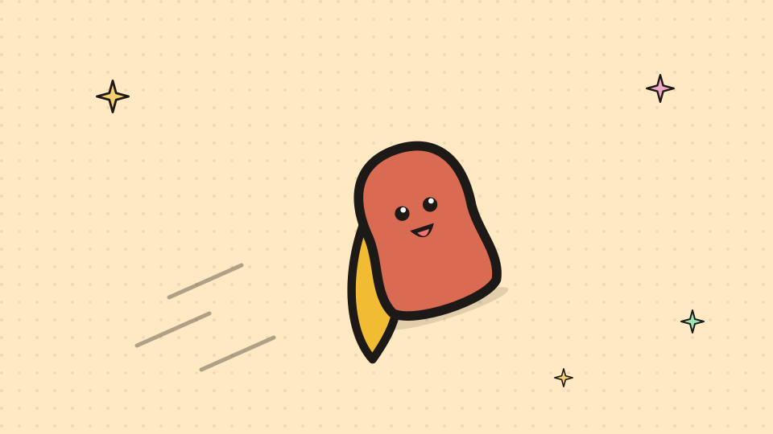
Understanding ADHD from a strengths-based perspectiveCHADD on leading with strengths.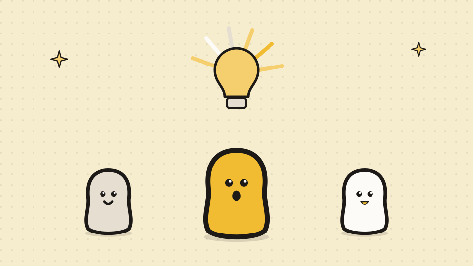
ADHD superpowers: discover and unlock your strengthsADDitude on hyperfocus, creativity and energy.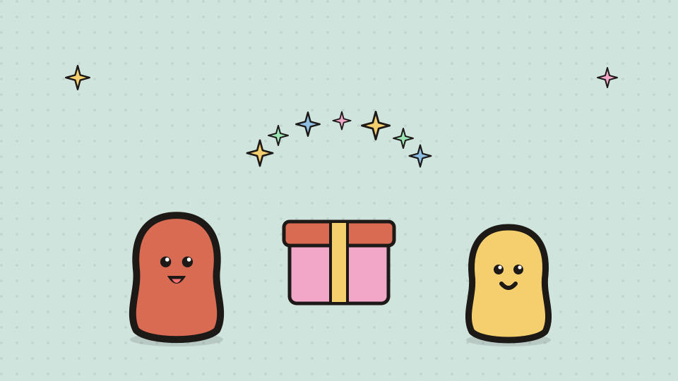
ADHD 2.0: a brain to unwrap, not a deficit to fixPsychology Today on the variable attention stimulus trait.Getting assessed


Focus and everyday life
 Body doubling: the least complicated focus tool there is.Start a task with company nearby.
Body doubling: the least complicated focus tool there is.Start a task with company nearby.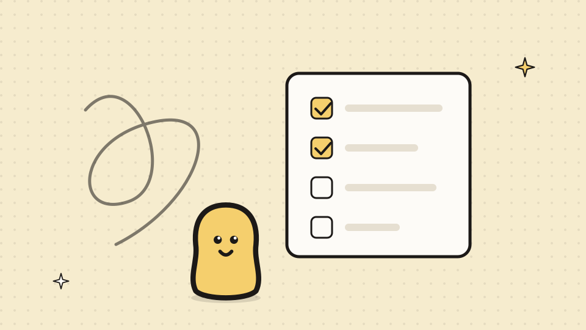
ADHD and executive functioning: what it is, and what helps.The skills that run your week.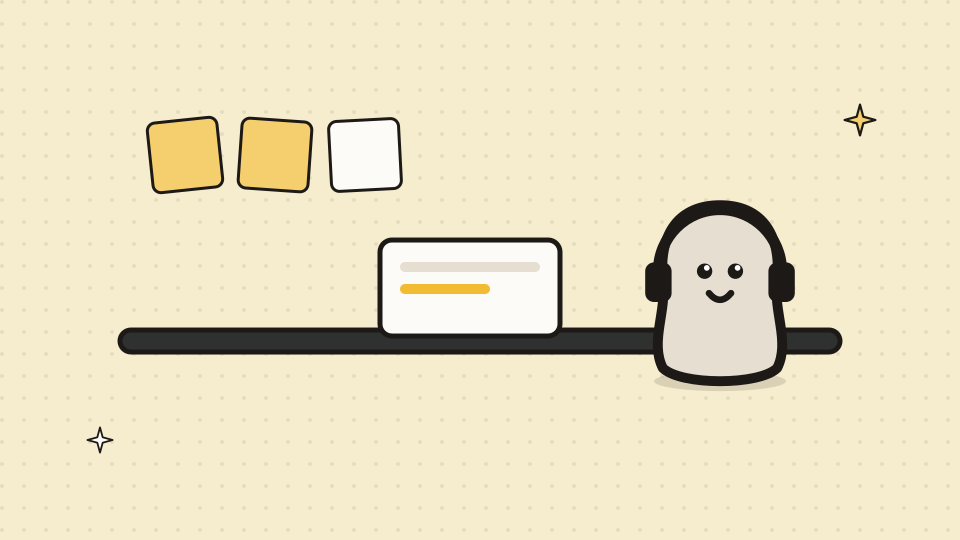
ADHD at work: adjustments that help, and how to ask.Reasonable adjustments, and how to ask.
 How to ADHDShort videos with practical tools.
How to ADHDShort videos with practical tools.Late recognition
 Diagnosed with ADHD as an adult? What the research says.Why adults get missed, and what good care looks like.
Diagnosed with ADHD as an adult? What the research says.Why adults get missed, and what good care looks like.

Wellbeing

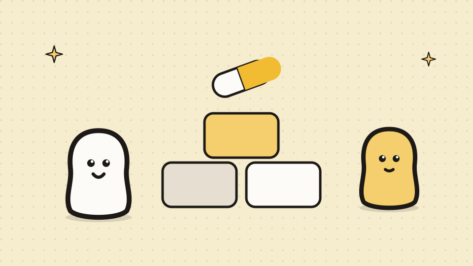
ADHD support beyond medication: what else works.Four kinds of help beyond a pill.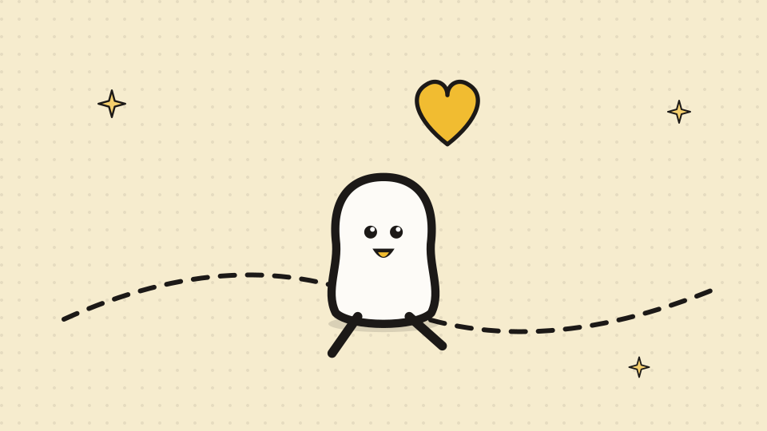
ADHD and exercise: what it does and how to keep going.Twenty minutes for an hour of focus.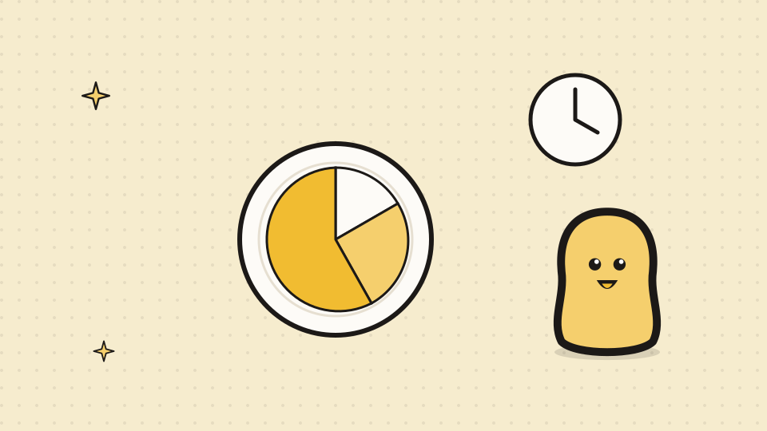
ADHD and nutrition: what the evidence says.Eat at set times, even without hunger.
First Nations


For parents
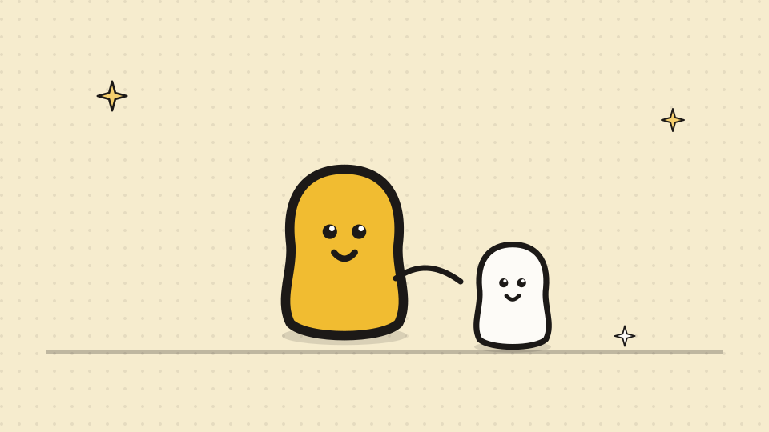
ADHD in children and teenagersRaising Children Network: Australia’s parenting site, on ADHD.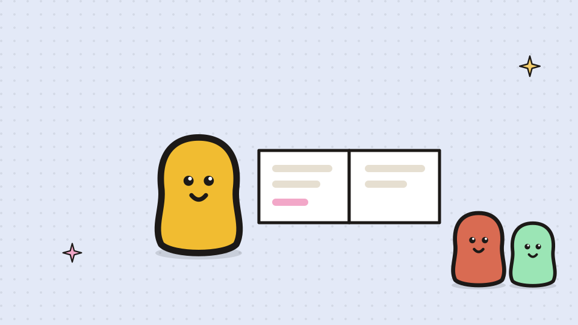
Parenting a child with ADHDCHADD: home, school and behaviour.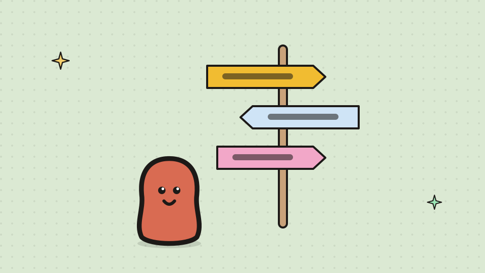
Clinicians who help with parenting a child with ADHDIn the navigator: Home, then Parenting a child with ADHD.Guidelines and resources

Clinician in the network? Clinical Academy sign-in